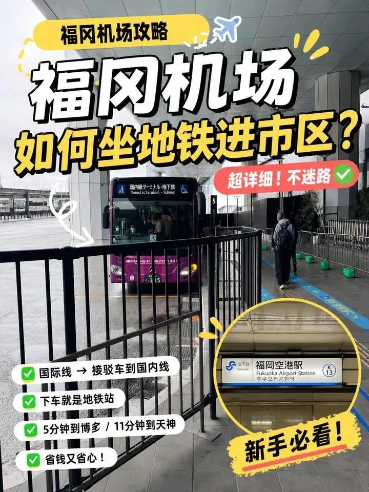
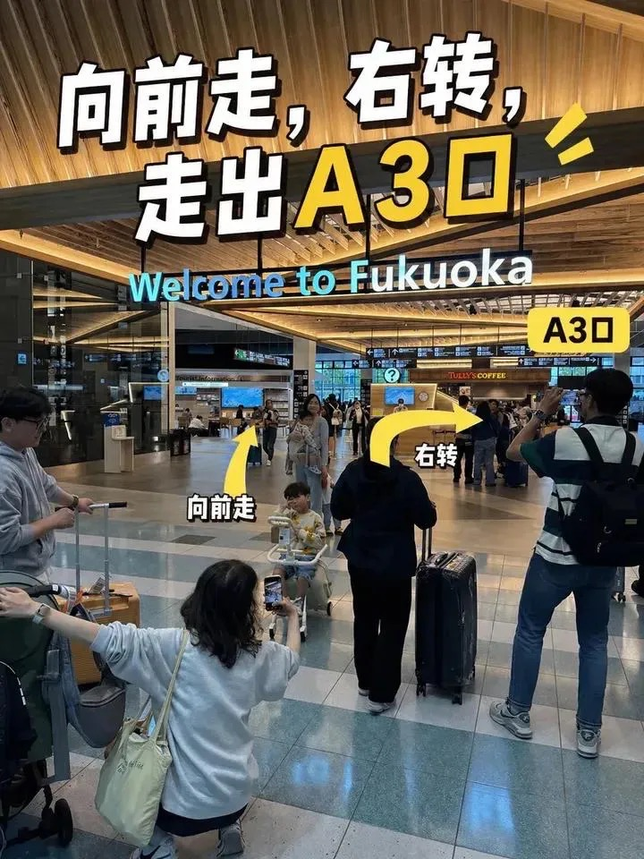
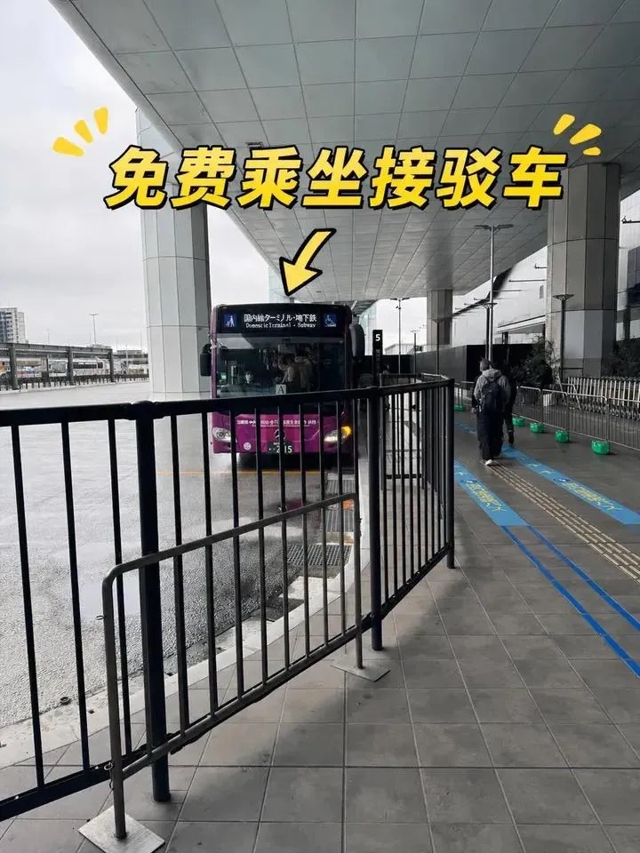
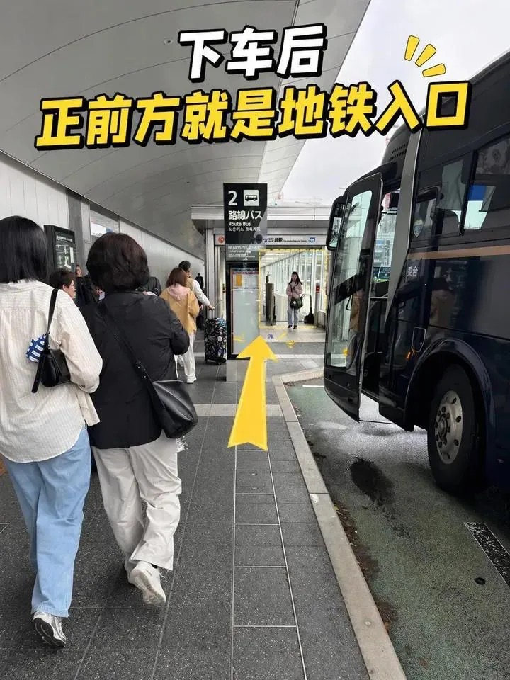
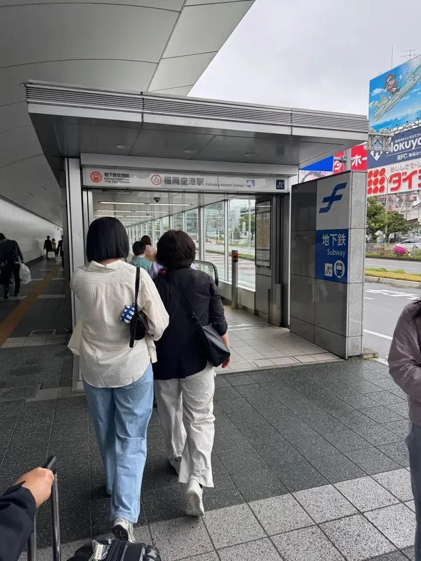

DAY01週五 12/25
📍 福岡市 · 博多 → 平尾 — 抵達日
抵達福岡 · Check-in × 藥院燒肉 × 屋台深夜
CI116 落地 19:35，通關 + 接駁 + 地鐵，約 21:00 抵達住宿；放下行李就去附近吃燒肉，有精力再殺去屋台喝一杯
19:35 落地
福岡空港（國際線）→ 接駁車 → 國內線 → 地鐵 → 博多駅（260 円）
福岡機場是日本離市區最近的機場之一，但國際線與國內線是分開的航廈，入境後需先搭接駁車才能轉地鐵。步驟如下：
攻略總覽
① 向前走右轉 → A3 口
② A3 口外搭免費接駁車
③ 下車後正前方即地鐵入口
③ 地下鐵 福岡空港駅 入口
辦理 Check-in 後可先把行李放置，輕裝出發。
福岡地鐵支援 NFC 信用卡感應過閘（Visa / Mastercard 皆可），單日上限 640 日圓，超過後當日免費，不需另購 IC 卡。
⚠ 西瓜卡（Suica）超過 640 円不會自動免費，請勿使用
注意：此上限僅適用於福岡市地下鐵路線（空港線、箱崎線、七隈線）。Day 2 搭 JR 去門司港、Day 4 搭 JR 去由布院等日歸行程，需另購 JR 車票或購買 SUGOCA IC 卡使用。
📱 參考影片說明 →
① 出境
出國際線入境大廳，沿指標走向 A3 出口
② 接駁
A3 出口外搭 免費接駁車（約 3–5 分鐘）→ 抵達國內線航廈
③ 地鐵
接駁車下車後，依指標進入 地下鐵出入口 → 搭空港線 5 分鐘直達 博多駅（260 円）





福岡地鐵支援 NFC 信用卡感應過閘（Visa / Mastercard 皆可），單日上限 640 日圓，超過後當日免費，不需另購 IC 卡。
⚠ 西瓜卡（Suica）超過 640 円不會自動免費，請勿使用
注意：此上限僅適用於福岡市地下鐵路線（空港線、箱崎線、七隈線）。Day 2 搭 JR 去門司港、Day 4 搭 JR 去由布院等日歸行程，需另購 JR 車票或購買 SUGOCA IC 卡使用。
📱 參考影片說明 →
~21:00
① Check-in — 平尾 / 藥院 住宿
從博多駅轉搭地鐵七隈線至 薬院大通駅（約 8 分鐘），步行至住宿辦理 Check-in，放下行李輕裝出發。今晚行程輕鬆，就在住宿附近解決。
21:30 — 晚餐
② 藥院燒肉 NIKUICHI — 住宿步行圈的和牛之夜
藥院是福岡在地人愛去的燒肉激戰區，和牛品質高、價格比天神實在。藥院燒肉 NIKUICHI ↗ 就在住宿附近，吃完直接走回去，第一晚不用趕時間。
與屋台可以搭配：先在 NIKUICHI 吃飽，再散步去天神屋台來杯生啤或一碗拉麵收尾。
與屋台可以搭配：先在 NIKUICHI 吃飽，再散步去天神屋台來杯生啤或一碗拉麵收尾。
📅 需提前 1 個月訂位 — Google Maps 頁面訂位 ↗ ｜ 備案：肉の山翔 ↗
22:30 — 深夜（可選）
③ 天神 · 中洲 屋台 — 博多靈魂深夜食
天神屋台（西中洲 · 那珂川沿岸）是福岡最有氣氛的露天食攤聚集區，一字排開在夜風中。一個人也能坐下，點一碗 豚骨ラーメン、一串烤物、一瓶生啤，聽老闆操著博多腔講故事。
若想要更熱鬧，可往 中洲屋台（中洲川端橋下，那珂川兩岸）前進，夜晚霓虹倒影在水面，那是只屬於博多的風景。
▶ 推薦屋台：屋台 小金ちゃん ↗（天神・親不孝通り入口，天神駅步行 5 分）— 1968 年創業，焼ラーメン（屋台炒拉麵）元祖，豚骨醬汁炒入捲麵、大蒜香氣撲鼻，另一招牌是焼き飯；18:30 開始，週四・日休息，需排隊
若想要更熱鬧，可往 中洲屋台（中洲川端橋下，那珂川兩岸）前進，夜晚霓虹倒影在水面，那是只屬於博多的風景。
▶ 推薦屋台：屋台 小金ちゃん ↗（天神・親不孝通り入口，天神駅步行 5 分）— 1968 年創業，焼ラーメン（屋台炒拉麵）元祖，豚骨醬汁炒入捲麵、大蒜香氣撲鼻，另一招牌是焼き飯；18:30 開始，週四・日休息，需排隊
💡 屋台通常營業至深夜 00:00–01:00，第一天晚到也來得及。吃飽燒肉後過來點一碗拉麵或生啤收尾，剛好。
🍜 Day 1 必吃
- 博多豚骨ラーメン — 屋台版豚骨拉麵，細麵 Q 彈、白湯濃郁
- 屋台おでん — 關東煮，冬天必點暖身
- 博多 明太子おにぎり — 便利商店也行，先感受一下
💡 Tips
- 全程建議住在博多駅 800m 圈內，後幾天去門司港、由布院都從這裡出發
- 今天行程輕鬆，明天 Day 2 要早起!!
- 博多站 B1 有置物櫃，晚到也可先寄行李再 check-in
DAY02週六 12/26
📍 山口縣下關 → 北九州門司港 → 八幡 — 週末限定
北九州海景一日 — 唐戶市場 × 門司港 × THE OUTLETS
跨縣渡海的一天：現場啃河豚握壽司，踏上懷舊港口青石板，傍晚掃 Outlet
07:30 — 出發
博多 → 小倉 → 門司港
從博多駅搭 JR 特急「ソニック」或「きらめき」至小倉（約 30 分），再轉 JR 鹿児島本線至門司港駅（約 15 分）。門司港駅本身是大正時代建築，是日本第一座鐵道紀念物，值得拍照。
09:00 — 渡海
搭「關門連絡船」→ 唐戶市場（5 分鐘 · 400 円）
從門司港碼頭搭關門渡輪，5 分鐘跨越關門海峽抵達對岸山口縣下關的唐戶棧橋，旁邊走路 1 分鐘就是唐戶市場。船班密集，不需等很久。
09:30 — 12:00
① 唐戶市場「活跳跳馬關街」— 週末限定海鮮狂歡
週六日 10:00–15:00 限定的市場內擺攤，各家漁師與壽司職人直接在現場握壽司、切刺身、盛海鮮丼，站著吃氣氛最好。
必吃：
• 河豚刺身 / 河豚握壽司 — 下關名物，彈牙鮮甜，200–400 円一貫
• 巨無霸黑鮪魚壽司 — 中腹大塊切，油脂豐厚，份量誇張
• 鰤魚（ぶり）握壽司 · 鯛魚 · 穴子
建議準時 09:30–10:00 抵達，熱門品項 11:30 左右會售完。
必吃：
• 河豚刺身 / 河豚握壽司 — 下關名物，彈牙鮮甜，200–400 円一貫
• 巨無霸黑鮪魚壽司 — 中腹大塊切，油脂豐厚，份量誇張
• 鰤魚（ぶり）握壽司 · 鯛魚 · 穴子
建議準時 09:30–10:00 抵達，熱門品項 11:30 左右會售完。
12:30 — 渡回
渡輪回 門司港（5 分鐘）
吃飽後搭渡輪返回門司港，進入門司港レトロ地区。若時間充裕可順道看看旁邊的赤間神宮（唐戶市場步行 2 分鐘，面向海峽的朱紅龍宮神社）再渡船。
13:00 — 16:00
② 門司港レトロ地区 — 大正浪漫港口
明治・大正時代西洋建築群保存完好：旧門司税関（紅磚洋館）、旧大阪商船（圓角塔樓）、門司港レトロ展望室（31F，免費）。
別錯過 藍翼門司（ブルーウィング もじ）——日本最大的步行者用跳橋，每天開橋 6 次（10:00、11:00、13:00、14:00、15:00、16:00），開啟時橋面緩緩升起約 60 度，非常壯觀。下午茶可吃當地名物 焼きカレー（表面焗烤的咖哩飯）。
別錯過 藍翼門司（ブルーウィング もじ）——日本最大的步行者用跳橋，每天開橋 6 次（10:00、11:00、13:00、14:00、15:00、16:00），開啟時橋面緩緩升起約 60 度，非常壯觀。下午茶可吃當地名物 焼きカレー（表面焗烤的咖哩飯）。
16:00 — 20:00
③ THE OUTLETS KITAKYUSHU × AEON MALL
從 JR 門司港駅出發，搭 JR 鹿児島本線（方向：博多）至 スペースワールド駅（約 30 分），出站步行 2 分鐘即到。
2021 年全新開幕的大型 Outlet，Coach、Burberry、Kate Spade、Adidas、Under Armour 等品牌集中，建築設計感十足，戶外廣場舒適。Outlet 與 AEON MALL 相連，晚餐可在 Aeon 的 hearty 美食街解決，選擇多元不怕不夠吃。
約 20:00 從スペースワールド駅搭 JR 至小倉（20 分），再轉新幹線回博多（15 分），輕鬆到家。
2021 年全新開幕的大型 Outlet，Coach、Burberry、Kate Spade、Adidas、Under Armour 等品牌集中，建築設計感十足，戶外廣場舒適。Outlet 與 AEON MALL 相連，晚餐可在 Aeon 的 hearty 美食街解決，選擇多元不怕不夠吃。
約 20:00 從スペースワールド駅搭 JR 至小倉（20 分），再轉新幹線回博多（15 分），輕鬆到家。
🐡 Day 2 必吃
- 河豚握壽司 — 唐戶市場週末現場握，下關必吃
- 黑鮪魚中腹 — 大塊切、油脂豐、份量誇張
- 門司港 焼きカレー — 港口名物，多家各有版本
- AEON 美食街晚餐 — 逛累了就地解決
💡 Tips
- 唐戶市場週末人潮大，09:30 準時到最划算
- 藍翼門司開橋時間固定，可提前在官網確認當日時刻
- Outlet 逛前先上官網查好目標品牌清單，省時省腳力
- 回程新幹線小倉→博多只需 15 分，不用太早趕
DAY03週日 12/27
± 泊
📍 大分縣 · 由布院温泉 → 別府市
由布院溫泉 — 金鱗湖 × 湯の坪街道 × B-Speak ロールケーキ → 別府 check-in
ゆふいんの森 穿越九州山脈抵達由布院，散策山間小鎮後傍晚移駕別府，溫泉之都的溫泉旅館等著你
07:30 — 出發
搭「ゆふいんの森」特急（全車指定席，需提前預約）
深綠色復古觀光特急，大窗木質感車廂，車程本身就是旅行亮點之一。全程約 2 小時，需提前在 JR 九州官網 或「えきねっと」預約指定席（加算約 2,000–3,000 円）。
班次少（每天約 2–3 班），務必提前 一個月預約。若無票，高速バス「福岡・福岡機場～由布院線」也很方便（1,200 円，全程約 2 小時，需提前預約）。
班次少（每天約 2–3 班），務必提前 一個月預約。若無票，高速バス「福岡・福岡機場～由布院線」也很方便（1,200 円，全程約 2 小時，需提前預約）。
09:30 — 12:00
① 湯の坪街道 — 主街道慢慢逛
從由布院駅延伸至金鱗湖的主街道，精品雜貨、工藝品、甜點鋪密集。
必停：
• B-Speak — 由布院最有名蛋糕卷，需排隊，下午常售完，一開門就去
• 各家 プリン（布丁）鋪 — 口味眾多，邊走邊試
• 和牛コロッケ — 現炸九州和牛可樂餅，外酥內嫩
必停：
• B-Speak — 由布院最有名蛋糕卷，需排隊，下午常售完，一開門就去
• 各家 プリン（布丁）鋪 — 口味眾多，邊走邊試
• 和牛コロッケ — 現炸九州和牛可樂餅，外酥內嫩
12:00
② 由布院フローラルビレッジ — 歐洲童話村
以英國湖區小村為概念設計的商店街，石板路旁是各種精緻雜貨店、貓頭鷹貓咪雜貨店、花草茶屋。適合拍照和買紀念品，貓頭鷹館（ふくろうの館）可近距離和貓頭鷹互動。
14:00
③ 金鱗湖 — 由布岳倒影 × 湖畔散步
由布院最著名的湖，清晨溫差大時湖面升起薄霧，由布岳倒映湖中如夢似幻。下午陽光下的湖面呈現寶石綠藍，湖畔有幾間湖景咖啡廳可以坐下來發呆，喝一杯抹茶。
15:30 — 出發
④ 前往別府 — JR or バス（約 40 分）
由布院駅 → JR 久大本線（約 40 分）→ 別府駅，或搭龜の井バス（亦約 40 分）。抵達別府後辦理 check-in，放下行李。
17:00
⑤ 別府 飯店溫泉 × 晚餐
別府有數十家溫泉旅館，含一泊二食方案，晚餐和早餐都包在內。地獄蒸し（地獄蒸し料理）是別府特有的烹調方式，以高溫蒸氣炊熟食材，鮮甜無比。推薦旅館：別府溫泉 杉乃井ホテル（景觀浴場「棚湯」最出名）。透過「じゃらん」或「一休.com」預訂。
🥩 若選外食晚餐：燒肉 円円 ↗（別府燒肉名店）｜備案：燒肉 Ichiriki ↗
🍮 Day 3 必吃
- B-Speak ロールケーキ — 一開門就去排，必買
- 和牛コロッケ — 九州和牛可樂餅，現炸最香
- 旅館会席料理（含一泊二食）— 大分地產精華
- 燒肉 円円 ↗ — 別府燒肉名店｜備案：燒肉 Ichiriki ↗
💡 Tips
- ゆふいんの森 必須提前 1 個月訂，JR 九州官網可線上購買
- 由布院市區全程步行可完成，或租自行車 500 円/日
- 住宿選含一泊二食方案，晚餐早餐全包，省去選擇困難
- B-Speak 常常開門不久就售完，建議抵達後第一件事先去排隊
DAY04週一 12/28
📍 別府退房 → 博多 → 太宰府市
返博多 × 太宰府天満宮 × 梅ヶ枝餅 × 隈研吾スターバックス
上午從別府搭バス返博多，下午直奔太宰府——千年學問神社 × 現烤梅枝餅 × 建築大師設計的星巴克，2–3 小時玩透
09:00 — 出發
別府退房 → 搭高速バス返博多
別府駅前バスターミナル 搭乘高速バス，直達 博多駅（約 2 小時）。早上旅館早餐後退房出發。
11:30
抵博多 → 飯店寄行李（手荷物預かり）
返回 Airbnb 辦理 check-in（若可提前入住）或請飯店先行保管行李，輕裝出發太宰府。
12:10 — 出發
搭太宰府ライナーバス「旅人」
12:50
① 参道 — 梅ヶ枝餅 × 隈研吾スターバックス
參道兩側多家現烤梅ヶ枝餅，外皮微焦紅豆餡，150 円一個，太宰府必啃。
別忘了參道中段的 スターバックス太宰府天満宮表参道店，由日本建築大師隈研吾設計——外牆與室內天花板以數千根木棒交錯疊砌，像森林又像一座裝置藝術。就算不喝咖啡，進去看一眼也值得。
別忘了參道中段的 スターバックス太宰府天満宮表参道店，由日本建築大師隈研吾設計——外牆與室內天花板以數千根木棒交錯疊砌，像森林又像一座裝置藝術。就算不喝咖啡，進去看一眼也值得。
14:00
② 太宰府天満宮 — 千年學問神社
全日本 12,000 座天満宮總本社，供奉學問・藝術之神菅原道真公。太鼓橋、飛梅傳說、境內神牛像一一到訪。2023 年起本殿整修，但莊嚴仮殿同樣充滿千年靈氣。
16:00 — 返博多
搭バス返博多 → 晚餐
原路搭旅人バス返回博多（約 40 分）。晚餐可選博多もつ鍋、博多水炊き，或在藥院屋台再戰一回。明天 Day 5 是 KKday 全天行程，今晚早點休息。
🍜 Day 4 必吃
- 梅ヶ枝餅 — 参道現烤，外皮焦香、紅豆餡，150 円一個，太宰府必啃
- 拉麵 魁源 太宰府店 ↗ — 推薦招牌「蝦香醬油拉麵」，蝦油香氣濃郁，醬油湯底清澈回甘，太宰府参拜後的最佳午餐選擇
💡 Tips
- ⚠ 九州国立博物館週一休館，但天満宮本殿與参道店家正常開放
- 参道買梅ヶ枝餅邊走邊吃，再進去星巴克坐下來拍照
- 太宰府全程步行可完成，從バス站到天満宮約 10 分鐘
DAY05週二 12/29
全天
📍 宮崎縣 · 高千穗峽（KKday 接送一日遊，從博多出發）
高千穗峽 一日遊 — 上色見熊野座神社 × 高千穗峽遊船 × 天岩戶神社 × 天安河原
KKday 全程接送，九州最神秘的峽谷神話地帶——108 盞石燈籠神社 × 柱狀節理峽谷 × 日本神話天照大神洞窟聖地
① 上色見熊野座神社
108 盞石燈籠 × 青苔石階 × 杉木森林
熊本縣著名神社，通往本殿的石階兩側矗立著 108 盞石燈籠，覆滿青苔的石板路配上杉木森林，如夢似幻。點燈時分尤其靜謐神秘。
② 高千穗峽
峽谷絕景 × 真名井の滝 × 遊船（可選）
玄武岩柱狀節理構成的峽谷，真名井の滝從高處懸瀉而下。遊船（可選）在峽谷中漂行，仰望瀑布視角震撼。遊船熱門、建議提前確認是否含在行程內。
③ 天岩戶神社
日本神話起源地 — 天照大神洞窟
日本神話中天照大神藏身的洞窟所在。本殿穿過鳥居可眺望洞窟遺址，境內神聖氣息濃厚，可申請神職人員帶領參拜。
④ 天安河原
千疊石塚 × 洞窟神社 × 燭光搖曳
從天岩戶神社步行約 10 分鐘，沿河前行進入大洞窟，裡面堆疊著無數旅客祈願的石塚，幽暗空間中蠟燭微光搖曳，是高千穗最令人震撼的畫面。
傍晚 — 返博多
KKday 送回博多 → 最後晚餐
返回博多後，明天就要返台了。可在天神或博多站附近來一頓豐盛的博多もつ鍋或博多水炊き，或最後一次到屋台補一碗豚骨拉麵。
🍖 Day 5 必吃
- 高千穗鄉土料理 — 地雞南蠻・地雞刺身，行程午餐
- 博多もつ鍋 or 水炊き — 最後晚餐，回博多後補一鍋
💡 Tips
- KKday 行程需提前預約，名額有限，愈早訂愈好
- 高千穗峽遊船旺季極搶手，確認行程是否含遊船
- 天安河原洞窟內光線昏暗，手機拍照記得開大光圈
- 隔天 Day 6 就返台，今晚可留時間整理行李
DAY06週三 12/30
📍 福岡市 · 博多 — 返台日
博多最終巡禮 — 神社 × 商店街 × 最後補貨
視回程班機時間，輕鬆收尾；博多站搭地鐵 5 分鐘直達機場，從容不迫
08:00
① 櫛田神社 — 博多の総鎮守
博多最重要的守護神社，主祭博多祇園山笠祭（每年7月）。境內常設展示著博多山笠的大型裝飾山笠（高達 15 公尺的巨型裝飾台車），可近距離欣賞這個世界無雙的傳統工藝。早晨幾乎沒有觀光客，是這趟旅行最安靜的一個早晨。
09:00
② 川端通商店街 — 博多最古老商店街
全長約 400m，連接博多リバレイン與中洲川端，日本式拱廊老商店街，薄皮饅頭、和菓子店、傳統手工藝品混雜其間。與隔壁的博多リバレイン連通，現代商場與百年商店街無縫接軌，採購最後伴手禮的好地點。
10:30
③ 博多運河城 or 博多駅 — 最後補貨
博多運河城（キャナルシティ博多）：明太子、博多通りもん等伴手禮齊全，美食區豐富，適合最後一餐或採購。
博多駅 JR HAKATA CITY 地下「博多デイトス」：伴手禮種類最集中、最全，明太子（ふくや / 椒房庵 / やまや）、博多通りもん、ひよ子等在此一次買齊。
博多駅 JR HAKATA CITY 地下「博多デイトス」：伴手禮種類最集中、最全，明太子（ふくや / 椒房庵 / やまや）、博多通りもん、ひよ子等在此一次買齊。
12:00
④ 博多ラーメン STA. — 最後一碗豚骨
博多駅 9F「博多ラーメン STA.」匯集多家博多拉麵品牌。出發前最後一碗豚骨，讓這個味道成為此行最深刻的記憶。
出發前
博多駅 → 福岡空港（地鐵空港線 · 2 站 · 5 分鐘 · 260 円）
福岡機場是日本離市區最近的國際機場，從博多站搭地鐵空港線，5 分鐘直達國內線，再轉接駁車約 5 分鐘可到國際線。輕鬆從容，完美結束六天旅程。
🎁 必帶伴手禮
- 明太子 — ふくや / 椒房庵 / やまや，各有風味
- 博多通りもん — 白蓮餡和菓子，最穩定的選擇
- ひよ子 — 小雞造型饅頭，送禮可愛
- 一蘭 / 一風堂 泡麵組 — 博多駅有售
- 博多織 小物 — 精緻絲織品，送長輩
💡 Tips
- 明太子冷藏版出發前 2 小時購買可托運，冷凍版可提前幾天買
- 博多駅有置物櫃，先寄行李再做最後採購
- 國際線建議提前 2 小時到，但距離近，非常從容
📋 旅行整體備忘
📅 行程日期對應
- Day 1（五）博多抵達
- Day 2（六）北九州跨海之旅 ✓
- Day 3（日）由布院 → 別府 溫泉
- Day 4（一）太宰府（返博多下午）
- Day 5（二）高千穗峽 KKday 一日遊
- Day 6（三）博多 → 返台
🚉 各日交通重點
- Day 2：JR 特急 + 渡輪 + JR
- Day 3：ゆふいんの森（需提前 1 個月訂）
- Day 4：高速バス（別府→博多）+ 旅人バス→太宰府
- Day 5：KKday 高千穗一日遊（需提前預約）
🏨 住宿建議
- Day 1–2：博多駅 800m 圈（首選）
- Day 3 住宿：別府溫泉旅館（一泊二食）
- Day 4–6：回博多原飯店
- 行李可請飯店「手荷物預かり」保管
💴 每日預算參考
- Day 2 唐戶市場 ¥2,000–5,000
- 別府溫泉旅館 ¥15,000–30,000/人（含一泊二食）
- 博多住宿 ¥8,000–15,000/晚